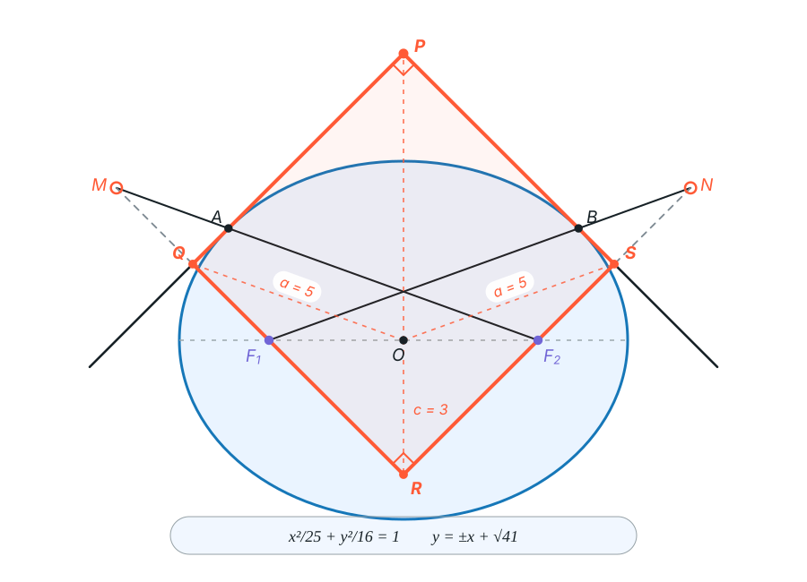
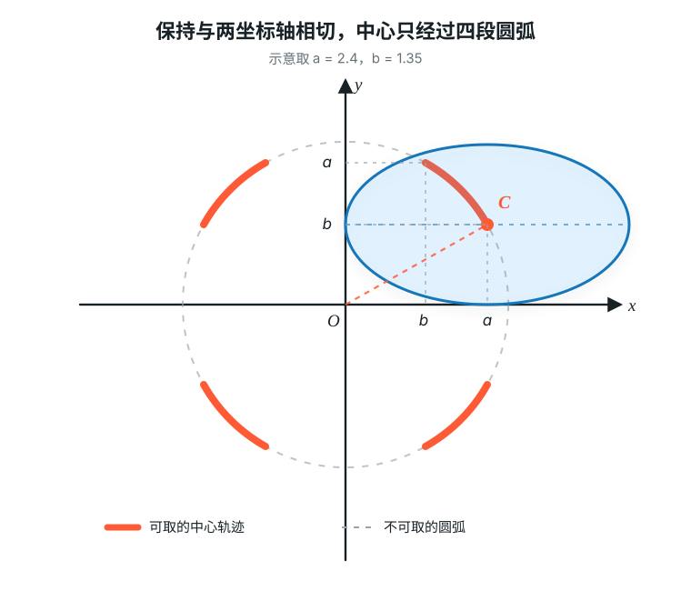

<meta data-alternate="https://freshmark.sunisalex.org/en/" data-article="true" data-canonical="https://freshmark.sunisalex.org/posts/math/monge-circle/" data-description="Intro 法国数学家加斯帕尔·蒙日发现：与椭圆$\frac{x^2}{a^2}+\frac{y^2}{b^2}=1$相切的两条垂直切线的交点的轨迹方程是$x^{2}+y^{2}=a^{2}+b^{2}$。这一结论被称为蒙日圆。 Prove Plan Mode 如何考虑直线与椭圆相切? 最显然的想法是让直线与椭圆联立所得一元二次方程判别式为0. 如何考虑两条直线垂直? 可以算出两条直线分别对应的斜率$k_1,k_2$" data-freshmark-page data-title="每日艺题:蒙日圆 — Freshmark"><main><header class="container article-header"><a href="/" class="back-link">← 返回全部文章</a><p class="eyebrow article-subject">数学</p><h1>每日艺题:蒙日圆</h1><p class="article-dek">Intro 法国数学家加斯帕尔·蒙日发现：与椭圆<span class="math-expression math-inline" data-math-source="\frac{x^2}{a^2}+\frac{y^2}{b^2}=1"></span>相切的两条垂直切线的交点的轨迹方程是<span class="math-expression math-inline" data-math-source="x^{2}+y^{2}=a^{2}+b^{2}"></span>。这一结论被称为蒙日圆。 Prove Plan Mode 如何考虑直线与椭圆相切? 最显然的想法是让直线与椭圆联立所得一元二次方程判别式为0. 如何考虑两条直线垂直? 可以算出两条直线分别对应的斜率<span class="math-expression math-inline" data-math-source="k_1,k_2"></span></p><div class="article-meta"><time datetime="2026-08-30">2026年8月30日</time><span>2 分钟阅读</span><span class="view-count" data-article-view-count hidden>本文访问量 <strong data-article-views></strong></span><a href="index.md" download>下载 Markdown</a><button type="button" class="article-share" data-share-article data-share-text="Intro 法国数学家加斯帕尔·蒙日发现：与椭圆$\frac{x^2}{a^2}+\frac{y^2}{b^2}=1$相切的两条垂直切线的交点的轨迹方程是$x^{2}+y^{2}=a^{2}+b^{2}$。这一结论被称为蒙日圆。 Prove Plan Mode 如何考虑直线与椭圆相切? 最显然的想法是让直线与椭圆联立所得一元二次方程判别式为0. 如何考虑两条直线垂直? 可以算出两条直线分别对应的斜率$k_1,k_2$" data-share-title="每日艺题:蒙日圆"><span data-share-label>分享文章</span></button><output aria-live="polite" class="visually-hidden" data-share-status role="status"></output></div></header><div class="article-wrap"><aside class="toc"><div class="toc-head"><p>本文目录</p><button type="button" class="toc-toggle" aria-expanded="false" aria-label="展开或收起目录" data-toc-toggle><span class="toc-toggle-label">目录</span><span class="toc-toggle-icon" aria-hidden="true"></span></button></div><nav aria-label="目录" class="toc-links" data-toc-links><a href="#intro" class="toc-level-1">Intro</a><a href="#prove" class="toc-level-1">Prove</a><a href="#plan-mode" class="toc-level-2">Plan Mode</a><a href="#goal-mode" class="toc-level-2">Goal Mode</a><a href="#alternative" class="toc-level-2">Alternative</a><a href="#practice" class="toc-level-1">Practice</a></nav></aside><article class="prose"><h1 id="intro">Intro</h1><p>法国数学家<a href="https://zh.wikipedia.org/wiki/%E5%8A%A0%E6%96%AF%E5%B8%95%E5%B0%94%C2%B7%E8%92%99%E6%97%A5">加斯帕尔·蒙日</a>发现：与椭圆<span class="math-expression math-inline" data-math-source="\frac{x^2}{a^2}+\frac{y^2}{b^2}=1"></span>相切的两条垂直切线的交点的轨迹方程是<span class="math-expression math-inline" data-math-source="x^{2}+y^{2}=a^{2}+b^{2}"></span>。这一结论被称为蒙日圆。</p><h1 id="prove">Prove</h1><h2 id="plan-mode">Plan Mode</h2><p>如何考虑直线与椭圆相切?</p><p>最显然的想法是让直线与椭圆联立所得一元二次方程判别式为0.</p><p>如何考虑两条直线垂直?</p><p>可以算出两条直线分别对应的斜率<span class="math-expression math-inline" data-math-source="k_1,k_2"></span>,让<span class="math-expression math-inline" data-math-source="k_1k_2=-1"></span>.</p><p>同时,还应该考虑斜率不存在的情况.</p><h2 id="goal-mode">Goal Mode</h2><p>设两垂直直线的公共点为<span class="math-expression math-inline" data-math-source="P(x_0,y_0)"></span>,直线方程为<span class="math-expression math-inline" data-math-source="y=k(x-x_0)+y_0=kx+(y_0-kx_0)"></span></p><p>联立椭圆<span class="math-expression math-inline" data-math-source="\frac{x^2}{a^2}+\frac{y^2}{b^2}=1"></span>与直线:</p><p><span class="math-expression math-display" data-math-source="b^2x^2+a^2y^2=a^2b^2\\
b^2x^2+a^2[kx+(y_0-kx_0)]^2=a^2b^2\\
(a^2k^2+b^2)x^2+2a^2k(y_0-kx_0)x+a^2[(y_0-kx_0)^2-b^2]=0\\
\Delta=4a^4k^2(y_0-kx_0)^2-4(a^4k^2+a^2b^2)[(y_0-kx_0)^2-b^2]=0\\
a^2k^2(y_0-kx_0)^2-(a^2k^2+b^2)[(y_0-kx_0)^2-b^2]=0\\
a^2b^2k^2-b^2(y_0-kx_0)^2+b^4=0\\
a^2k^2-(y_0-kx_0)^2+b^2=0\\
(a^2-x_0^2)k^2+2x_0y_0k+(b^2-y_0^2)=0" data-math-display></span></p><p>最后得到了关于<span class="math-expression math-inline" data-math-source="k"></span>的一元二次方程:</p><p><span class="math-expression math-display" data-math-source="\boxed{(a^2-x_0^2)k^2+2x_0y_0k+(b^2-y_0^2)=0}" data-math-display></span></p><p>要求<span class="math-expression math-inline" data-math-source="k_1k_2=\frac{a^2-x_0^2}{b^2-y_0^2}=-1"></span>,即<span class="math-expression math-inline" data-math-source="x_0^2+y_0^2=a^2+b^2"></span>.</p><p>因此,我们可以说明,满足条件的点轨迹几乎是一个圆.</p><p>对于斜率不存在的<strong>corner case</strong>,我们应加以讨论:</p><p>当其中一条直线斜率不存在时,另一条直线斜率为<span class="math-expression math-inline" data-math-source="0"></span>,这给出<span class="math-expression math-inline" data-math-source="(a,b),(a,-b),(-a,b),(-a,-b)"></span>四个点.</p><p>经检验,四个点悉数满足<span class="math-expression math-inline" data-math-source="x^2+y^2=a^2+b^2"></span>.</p><p>因此,满足条件的点轨迹为以原点为圆心,<span class="math-expression math-inline" data-math-source="\sqrt{a^2+b^2}"></span>为半径的圆.</p><h2 id="alternative">Alternative</h2><p>一个惊人的想法是,使用椭圆的光学性质,构建一个以<span class="math-expression math-inline" data-math-source="P(x_0,y_0)"></span>为顶点的矩形.</p><p>设两条切线与椭圆分别相切于<span class="math-expression math-inline" data-math-source="A,B"></span>.将左焦点<span class="math-expression math-inline" data-math-source="F_1"></span>关于<span class="math-expression math-inline" data-math-source="PA"></span>对称到点<span class="math-expression math-inline" data-math-source="M"></span>,将右焦点<span class="math-expression math-inline" data-math-source="F_2"></span>关于<span class="math-expression math-inline" data-math-source="PB"></span>对称到点<span class="math-expression math-inline" data-math-source="N"></span>.根据椭圆的光学性质,<span class="math-expression math-inline" data-math-source="F_2,A,M"></span>与<span class="math-expression math-inline" data-math-source="F_1,B,N"></span>分别三点共线,且</p><p><span class="math-expression math-display" data-math-source="F_2M=F_1N=2a." data-math-display></span></p><p>连接<span class="math-expression math-inline" data-math-source="F_1M"></span>交<span class="math-expression math-inline" data-math-source="PA"></span>于点<span class="math-expression math-inline" data-math-source="Q"></span>,连接<span class="math-expression math-inline" data-math-source="F_2N"></span>交<span class="math-expression math-inline" data-math-source="PB"></span>于点<span class="math-expression math-inline" data-math-source="S"></span>,再延长二者交于点<span class="math-expression math-inline" data-math-source="R"></span>.</p><figure class="prose-figure"><figcaption>焦点关于切线对称后得到两条长度为2a的反射光路，并由垂直切线构成辅助矩形PQRS。</figcaption></figure><p>因为<span class="math-expression math-inline" data-math-source="Q,S"></span>分别是<span class="math-expression math-inline" data-math-source="F_1M,F_2N"></span>的中点,<span class="math-expression math-inline" data-math-source="O"></span>是<span class="math-expression math-inline" data-math-source="F_1F_2"></span>的中点,由中位线定理知:</p><p><span class="math-expression math-display" data-math-source="OQ=\frac12F_2M=a,\qquad OS=\frac12F_1N=a." data-math-display></span></p><p>又因为<span class="math-expression math-inline" data-math-source="PA\perp PB"></span>,所以<span class="math-expression math-inline" data-math-source="PQRS"></span>是矩形,<span class="math-expression math-inline" data-math-source="\angle F_1RF_2=90^\circ"></span>.在直角三角形<span class="math-expression math-inline" data-math-source="F_1RF_2"></span>中,<span class="math-expression math-inline" data-math-source="O"></span>是斜边<span class="math-expression math-inline" data-math-source="F_1F_2"></span>的中点,故</p><p><span class="math-expression math-display" data-math-source="OR=\frac12F_1F_2=c." data-math-display></span></p><p>应用熟知的矩形几何结论:</p><p><span class="math-expression math-display" data-math-source="OP^2+OR^2=OQ^2+OS^2\\
OP^2=2a^2-c^2=a^2+b^2." data-math-display></span></p><p>同样,我们又得到了圆的半径<span class="math-expression math-inline" data-math-source="OP=\sqrt{a^2+b^2}"></span></p><h1 id="practice">Practice</h1><p>(上海交通大学)对于两条<strong>互相垂直</strong>的直线和一个<strong>椭圆</strong>,已知椭圆无论如何滑动都与两条直线<strong>相切</strong>,求椭圆中心的轨迹.</p><p>设两条互相垂直的直线为<span class="math-expression math-inline" data-math-source="x,y"></span>轴,其交点为原点<span class="math-expression math-inline" data-math-source="O"></span>,椭圆半长轴为<span class="math-expression math-inline" data-math-source="a"></span>,半短轴为<span class="math-expression math-inline" data-math-source="b"></span>,椭圆中心<span class="math-expression math-inline" data-math-source="C(x,y)"></span>.</p><p>此题恰是蒙日圆的反问题:已知蒙日圆的一切条件,但是椭圆中心为定点.</p><p>类似的,我们可以得到<span class="math-expression math-inline" data-math-source="OC=\sqrt{a^2+b^2}"></span>,但是切忌不能认为点C的轨迹为一个正圆:</p><p>点C不能取到圆上的所有点,因为有些点会让椭圆<span class="math-expression math-inline" data-math-source="C"></span>与两条坐标轴必然无法相切.</p><p>我们更细化分析临界条件:椭圆中心<span class="math-expression math-inline" data-math-source="C"></span>到坐标轴的最近情况.</p><p>设长度为<span class="math-expression math-inline" data-math-source="a"></span>的半轴与<span class="math-expression math-inline" data-math-source="x"></span>轴的夹角为<span class="math-expression math-inline" data-math-source="\theta"></span>,则椭圆中心到两条坐标轴的距离分别为</p><p><span class="math-expression math-display" data-math-source="|x_C|=\sqrt{a^2\cos^2\theta+b^2\sin^2\theta},\qquad
|y_C|=\sqrt{a^2\sin^2\theta+b^2\cos^2\theta}." data-math-display></span></p><p>二者的平方和恒为<span class="math-expression math-inline" data-math-source="a^2+b^2"></span>,但每个距离都不能小于椭圆的较短半轴.下图中,椭圆在第一象限内保持与两坐标轴相切,点<span class="math-expression math-inline" data-math-source="C"></span>描出的橙色圆弧即为轨迹的一部分;其余三段由对称性得到.</p><figure class="prose-figure"><figcaption>椭圆中心的轨迹不是整个蒙日圆，而是满足坐标绝对值下界的四段圆弧。</figcaption></figure><p>因此,椭圆中心<span class="math-expression math-inline" data-math-source="C"></span>的轨迹为:</p><p><span class="math-expression math-display" data-math-source="\boxed{x^2+y^2=a^2+b^2,\quad |x|,|y|\ge\min\{a,b\}}" data-math-display></span></p></article></div><section class="container comments" data-comments data-comments-path="/posts/math/monge-circle/"><div class="comments-head"><div><p class="eyebrow">评论</p><h2 data-comments-title>评论</h2></div><p>登录后参与讨论。注册时只需验证一次邮箱。</p></div><div class="comment-list" aria-live="polite" data-comment-list><p class="comment-state" data-comment-state>正在加载评论…</p></div><button type="button" class="comment-more" data-comments-more hidden>加载更早的评论</button><div class="comment-auth" data-comment-auth><p class="comment-auth-status" data-auth-loading>正在检查登录状态…</p><div hidden data-auth-guest><form class="comment-auth-form" data-auth-login><h3>登录后评论</h3><label>邮箱<input autocomplete="email" name="email" maxlength="254" required type="email"></label><label>密码<input autocomplete="current-password" name="password" maxlength="128" required type="password"></label><div class="comment-form-foot"><p class="comment-form-status" role="status" data-auth-login-status></p><button type="submit">登录</button></div></form><details class="comment-register"><summary>还没有账号？注册</summary><form class="comment-auth-form" data-auth-register><label>昵称<input autocomplete="name" name="name" maxlength="40" required></label><label>邮箱<input autocomplete="email" name="email" maxlength="254" required type="email"></label><label>密码<input autocomplete="new-password" name="password" maxlength="128" required type="password" minlength="8"></label><p class="comment-auth-hint">至少 8 个字符。</p><div class="comment-form-foot"><p class="comment-form-status" role="status" data-auth-register-status></p><button type="submit">注册</button></div></form></details></div><form class="comment-auth-form" hidden data-auth-verify><p>验证码已发送到邮箱，请在 10 分钟内完成注册。</p><label>六位验证码<input autocomplete="one-time-code" name="code" maxlength="6" required minlength="6" inputmode="numeric" pattern="[0-9]{6}"></label><div class="comment-form-foot"><p class="comment-form-status" role="status" data-auth-verify-status></p><button type="submit">完成注册</button></div></form><div class="comment-auth-user" data-auth-user hidden><p>当前登录： <strong data-auth-user-name></strong> <span data-auth-user-email></span></p><button type="button" data-auth-logout>退出登录</button></div></div><form class="comment-form" hidden data-comment-form><label>评论内容<textarea maxlength="2000" minlength="2" name="body" placeholder="写下你的想法…" required rows="5"></textarea></label><p class="comment-markdown-hint">支持 Markdown：加粗、链接、引用、列表和代码。</p><label aria-hidden="true" class="comment-honeypot">Website<input autocomplete="off" name="website" tabindex="-1"></label><div class="comment-form-foot"><p class="comment-form-status" role="status" data-comment-form-status></p><button type="submit" data-comment-submit>发表评论</button></div></form></section></main>